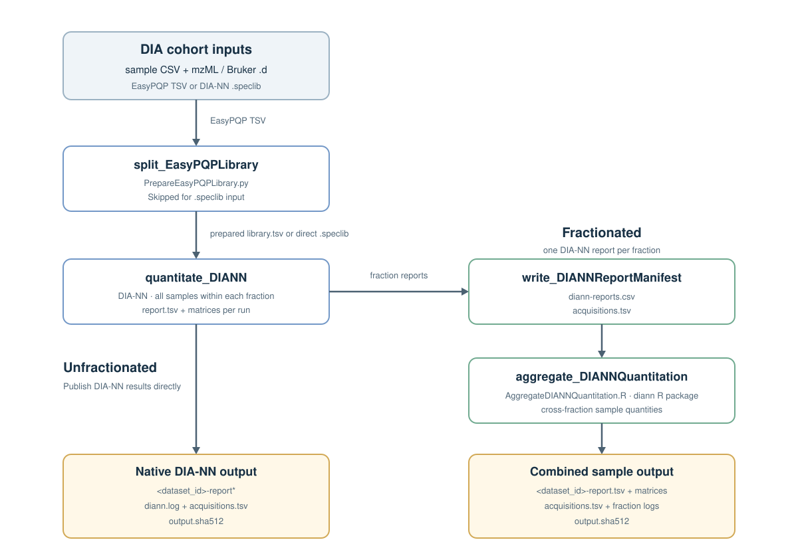

DIA quantitation
DIA-NN is used for quantitation. It measures peptides and proteins using the generated spectral library. Protein inference is disabled by default, so the protein groups assigned by ProteinProphet, Fido, or EPIFANY are retained.

Open the original flowchart at full size.

How it works
- Prepare the EasyPQP TSV for DIA-NN, validating and expanding the fragment annotations without changing the source library.
- Analyze all samples together for each fraction, using mzML acquisitions or the original Bruker
.ddirectories. - For an unfractionated cohort, retain DIA-NN’s native report and quantitation matrices.
- For a fractionated cohort, combine confident normalized precursor observations across fractions, sum repeated precursor quantities within each sample, and calculate sample-level protein-group quantities with
diann_maxlfq()from the DIA-NN R package.
The fractionated calculation does not apply extra cross-fraction intensity scaling. Its protein-group quantities are calculated by the aggregation step and should not be described as DIA-NN’s native QuantUMS output.
Inputs and outputs
SpectroMesa-DIA supplies the acquisition manifest and the generated EasyPQP library. Bruker quantitation uses the original .d data, not the reconstructed search spectra.
Outputs are the cohort report, precursor matrix, protein-group matrix, and quantitation logs. Final matrices contain one quantity column per sample_name, including experiments with multiple fractions. See Understanding results.
Keep the upstream protein groups
no_prot_inf already defaults to true. Leave it true: setting it to false allows DIA-NN to perform protein inference and changes the grouping strategy. No additional setting is needed to retain the upstream groups.
DIA-NN settings
Place DIA-NN options in the quoted 'DIA-NN' block inside quantitate_ProteomicDIA:
params {
quantitate_ProteomicDIA {
'DIA-NN' {
qvalue = 0.01
matrix_qvalue = 0.01
}
}
}
The table lists every DIA-NN option set by this workflow. Additional version-compatible DIA-NN options can be supplied in the same block: underscores become hyphens, a true Boolean adds a flag, false omits it, and a list repeats the option. For example, mass_acc = 10 adds --mass-acc 10.
The DIA-NN command-line documentation describes additional flags; check that they exist in the DIA-NN version in your selected container. The workflow reserves lib, fasta, f, dir, out, threads, and cfg, so do not set them in this block. SpectroMesa-DIA supplies the library and acquisition paths automatically.
Parameter reference
Use the quantitate_ProteomicDIA block inside params in your run configuration. Names beginning with DIA-NN. belong inside its nested 'DIA-NN' block. Values below describe this step as used by SpectroMesa-DIA. Settings marked automatically supplied do not need to be repeated.
Analysis settings
| Parameter | Type | Default / supplied value | Meaning |
|---|---|---|---|
fasta |
Path | Not set | Optional source FASTA for standalone DIA-NN library workflows. Not required for the EasyPQP library supplied by SpectroMesa-DIA. |
copy_inputs_to_work |
Boolean | false | Copy staged acquisitions and reference files into the task work directory instead of symlinking them |
DIA-NN options
| Parameter | Type | Default / supplied value | Meaning |
|---|---|---|---|
DIA-NN.qvalue |
Number | 0.01 | Maximum precursor q-value in the main DIA-NN report. |
DIA-NN.matrix_qvalue |
Number | 0.01 | Q-value threshold for the quantitation matrices. |
DIA-NN.verbose |
Number | 1 | Diagnostic output level reported by DIA-NN. |
DIA-NN.matrices |
Boolean | true | Write precursor and protein-group quantitation matrices. |
DIA-NN.smart_profiling |
Boolean | true | Pass DIA-NN’s smart-profiling option for empirical spectral profiling. Its behavior depends on the bundled DIA-NN version. |
DIA-NN.no_quant_files |
Boolean | true | Do not write DIA-NN .quant cache files. Report tables and matrices are still produced. |
DIA-NN.peak_center |
Boolean | true | Pass the peak-center quantitation option used by the bundled DIA-NN workflow. |
DIA-NN.no_ifs_removal |
Boolean | true | Disable DIA-NN fragment interference correction. Already true in this workflow. |
DIA-NN.report_lib_info |
Boolean | true | Include library information in DIA-NN’s output report. |
DIA-NN.no_prot_inf |
Boolean | true | Disable DIA-NN protein inference. Already true; keep true to retain the groups supplied by ProteinProphet, Fido, or EPIFANY. |
Software and containers
These defaults record the software environment. When replacing an image, check its compatibility with the workflow; a version label alone does not guarantee the required tools are installed.
| Parameter | Type | Default / supplied value | Meaning |
|---|---|---|---|
docker_image_pyopenms |
Text | ghcr.io/theboutroslab/pyopenms:3.5.0 | Container image used for pyopenms. Change only when using a compatible replacement image. |
docker_image_fragpipe |
Text | fcyucn/fragpipe:24.0 | Container image used for fragpipe. Change only when using a compatible replacement image. |
docker_image_diann_rpackage |
Text | ghcr.io/theboutroslab/diann-rpackage:af538f6 | Container image used for diann_rpackage. Change only when using a compatible replacement image. |
Automatically supplied settings
| Parameter | Type | Default / supplied value | Meaning |
|---|---|---|---|
dataset_id |
Text | Shared dataset_id | Analysis name used to organize and name outputs. |
input_csv |
Path | Generated quantitation manifest | CSV requiring sample_name and path columns; extra columns are allowed; one mzML file or Bruker .d directory per sample |
library |
Path | Generated EasyPQP TSV | EasyPQP cohort library .tsv or DIA-NN .speclib; a .predicted.speclib requires FASTA |
output_dir |
Path | Assigned within the analysis output | Destination for this step. Set the shared output_dir for the complete analysis. |
Computing and temporary files
The shared parameter reference describes CPU, memory, work-directory, and container-cache settings. This pipeline declares: work_dir, apptainer_library, apptainer_cache, base_resource_update, resource_allocation_profile_tag, max_cpus, max_memory, min_cpus, min_memory.
The tables were checked against the individual pipeline configuration and the SpectroMesa-DIA settings that select this workflow.
Related steps
Overview · Shared parameters · Configuring an analysis